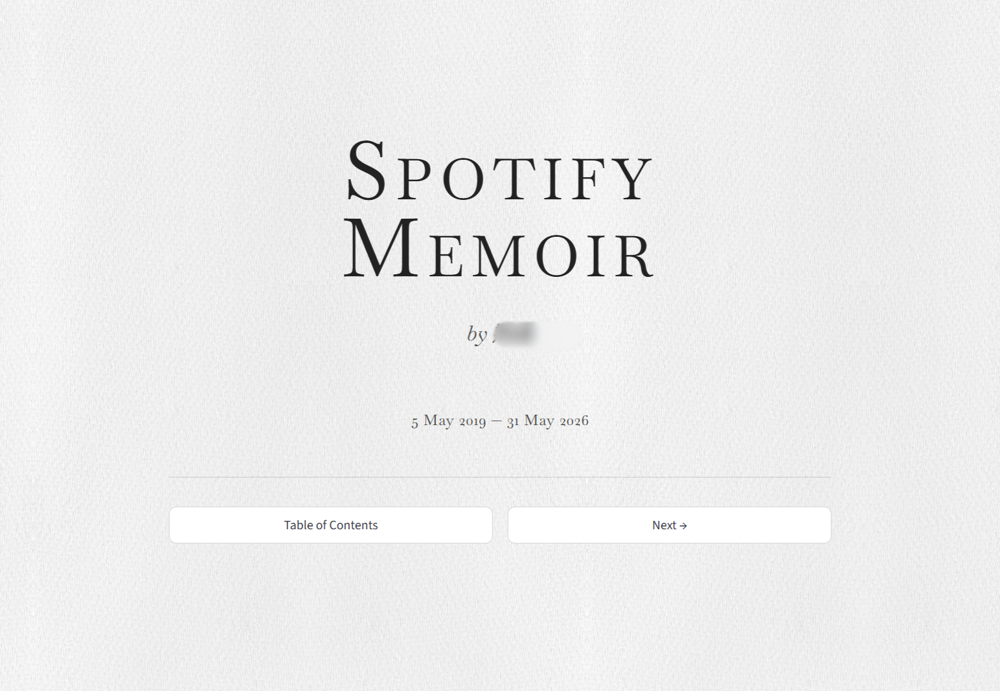
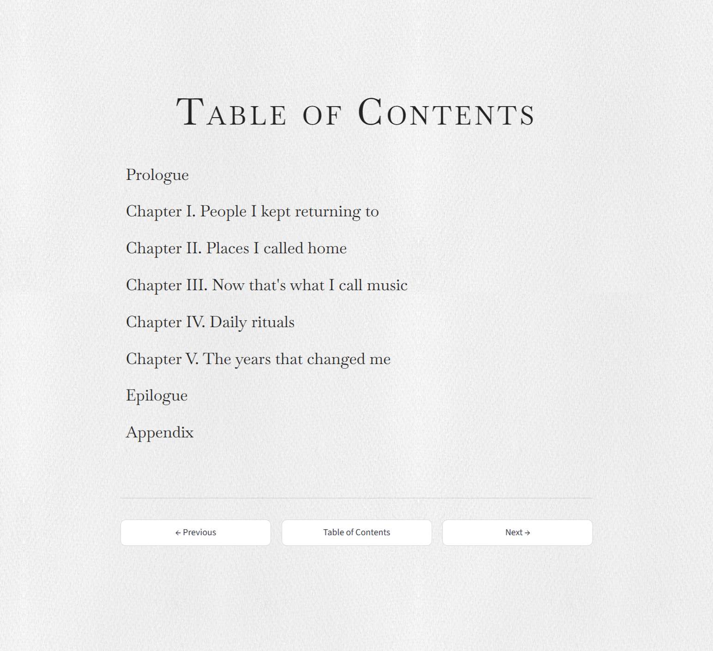
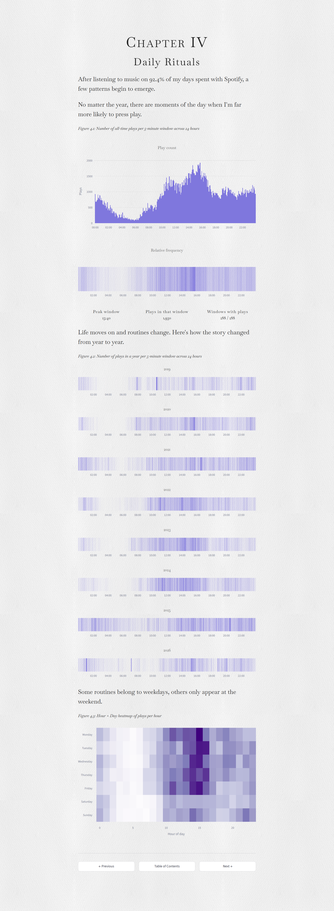
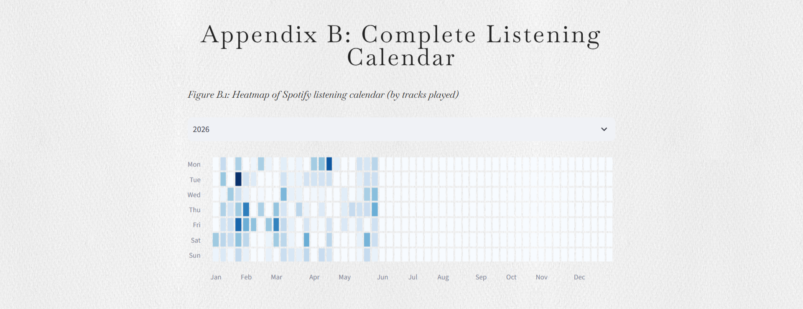
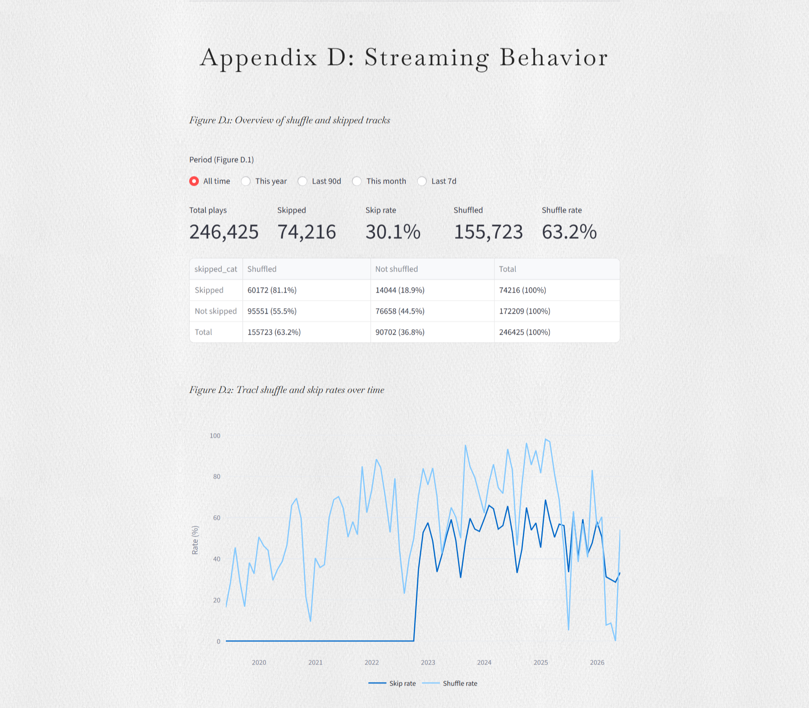

Spotify Analytics
This project focuses on analysing a user's personal Spotify data to generate insights and visualisations. It involves processing large real-world data and creating an interactive dashboard. The project is designed to demonstrate data science techniques in a real-world context.
You can read more about the project code and implementation details on the github repository.
Features
- Python pipeline to import Spotify Extended Streaming History JSON files to analyse listening trends
- Python pipeline to import Spotify Account Data (Your Library) to identify saved songs from your library
- Python pipeline to load and store processed data in a MySQL database for efficient querying and management
- Generation of an interactive data app, using Streamlit, displaying key listening statistics and trends
Technologies & Tools
- Python
- Streamlit
- MySQL
- Plotly
- HTML
- CSS
- DBeaver
Dashboard App
- Interactive dashboard data app built with Streamlit to display key listening statistics and trends
- Visualisations include top artists, top tracks, listening trends over time, and more
- Users can filter data by time range and other parameters to explore their listening habits
- Design is motivated by the idea of a user's listening history as a memoir
Screenshots:





Back to projects